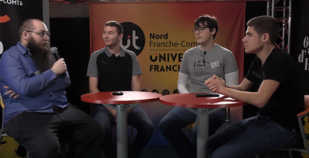
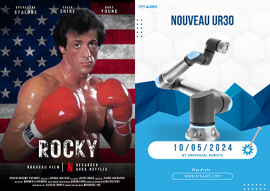

Bonjour, je suis Maxime Ruchet, Assistant marketing Web et communication. Je suis passionné par le monde du marketing numérique et de la communication. Bienvenue sur mon portfolio, où je partage mes projets et mes réalisations.
Actuellement étudiant en Bachelor Universitaire de Technologie en Métiers du Multimédia et de l'Internet à Montbéliard, j'ai acquis une solide base de compétences dans le domaine du web et de la communication.
Je possède une palette variée de compétences dans le domaine du marketing numérique et de la communication. Maîtrisant divers techniques pour arrivé au bout de mes projets.
Convaincu que la passion et l'engagement sont les clés de la réussite, je m'investis pleinement dans tout ce que j'entreprends. Ma principale motivation réside dans ma volonté constante de me surpasser et d'apprendre continuellement dans le domaine du marketing numérique.
Ma mission est de créer des expériences numériques exceptionnelles qui captivent et engagent le public. En m'appuyant sur mes compétences en marketing web et en communication.
Optimisation du contenu d'un site Web pour améliorer son classement dans les moteurs de recherche, effectuer une recherche de mots clés, créer des liens et surveiller les performances.
Développement de sites web sur mesure. Que ce soit pour créer une présence en ligne professionnelle ou autres, je m'engage à concevoir des sites web fonctionnels et adaptés aux besoins spécifiques de mes clients.
Développer une stratégie de marketing en ligne adaptée aux objectifs de l'entreprise, en utilisant une combinaison de canaux tels que les médias sociaux, le référencement, la publicité payante, le marketing par e-mail, etc.
Créer et publier du contenu sur les plateformes de médias sociaux pertinentes, gérer les interactions avec les abonnés, surveiller les performances et analyser les données pour optimiser les stratégies.
Plateforme de sensibilisation à la cybersécurité à destination des étudiants et entreprises, avec ressources, ateliers et site dédié.
En savoir plus
Participation en tant que présentateur et responsable de la régie pour la Journée Portes Ouvertes 2024.
En savoir plus
Conception d’affiches et déclinaisons print pour promouvoir divers événements.
En savoir plus
Communication et visuels réalisés pour la présentation d’un nouveau produit lors d’un webinaire professionnel.
En savoir plus